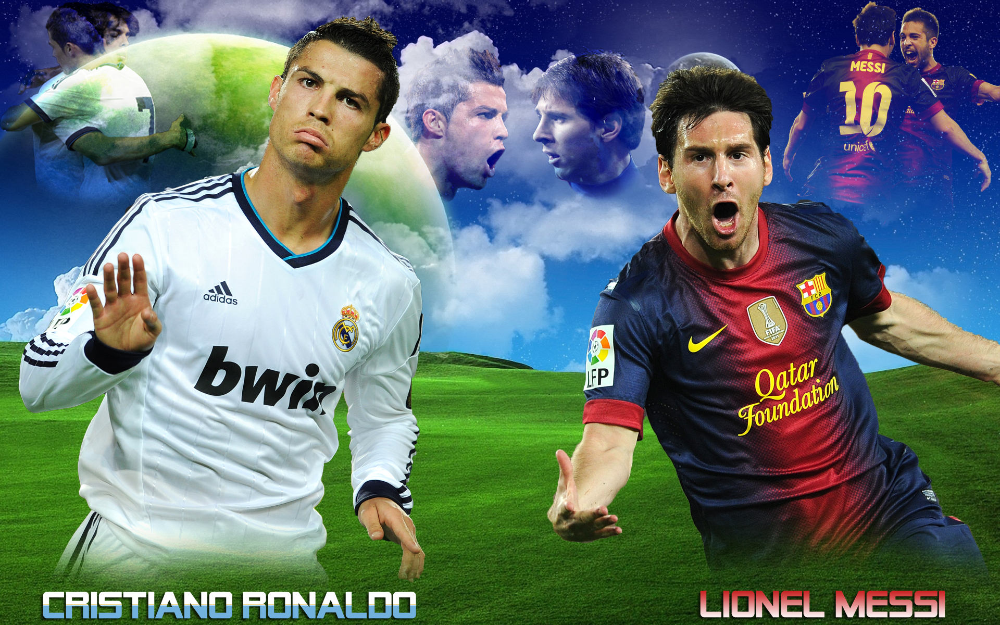

Barcelona FC
Founded in 1899 by a group of Swiss, English and Catalan footballers led by Joan Gamper, the club has become a symbol of Catalan culture and Catalanism, hence the motto "Més que un club" (More than a club). Unlike many other football clubs, the supporters own and operate Barcelona. It is the second most valuable sports team in the world, worth $3.2 billion, and the world's fourth richest football club in terms of revenue, with an annual turnover of €484.6 million.The official Barcelona anthem is the "Cant del Barça", written by Jaume Picas and Josep Maria Espinà
Founded in 1902 as Madrid Football Club, the team has traditionally worn a white home kit since. The word Real is Spanish for Royal and was bestowed to the club by King Alfonso XIII in 1920 together with the royal crown in the emblem. The team has played its home matches in the 81,044-capacity Santiago Bernabéu Stadium in downtown Madrid since 1947. Unlike most European football clubs, Real Madrid's members (socios) have owned and operated the club since its inception.
Manchester United have won 20 league titles, the most of any English club, 11 FA Cups, four League Cups and a record 20 FA Community Shields. The club has also won three European Cups, one UEFA Cup Winners' Cup, one UEFA Super Cup, one Intercontinental Cup and one FIFA Club World Cup. In 1998–99, the club achieved a treble of the Premier League, the FA Cup and the UEFA Champions League.
Liverpool were founded in 1892 and joined the Football League the following year. They have played at Anfield since its formation. The most successful period in Liverpool's history was the 1970s and '80s when Bill Shankly and Bob Paisley led the club to eleven league titles and seven European trophies.
Don't miss the Entertainment
Don't miss the Entertainment